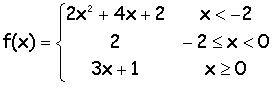

Descripción:
- Desarrollarán los algoritmos y
programas de algunos problemas que requieren manejo de condiciones.

Objetivo:
- Aplicar la estructura de
control if (if, else y elif anidados) y los operadores relacionales.

Modalidad y forma de trabajo: Diseño colaborativo, implementación
individual.
- Intégrate con tu equipo colaborativo y sigue las indicaciones
del profesor.
- Junto con tus compañeros de equipo, analiza cada uno de
los ejercicios que se presentan a continuación.
- Identifiquen, en
equipo, cual sería el algoritmo para la solución de cada uno
de los ejercicios. Recuerden documentarlos en sus hojas membretadas.
- De manera individual escribe un programa en
Python para cada uno de
los ejercicios. Recuerda basarte en el algoritmo que se generó en
el equipo.
- Una vez que hayas terminado tus programas,
apoya a tus compañeros de equipo con las dudas que tengan (no hagas el
laboratorio por ellos ya que esto sólo los perjudica).
- Entrega por Canvas, los archivos *.py que
contengan los programas en Python.

Instrucciones:
.
Ejercicio 1.
-
Desarrolla un programa completo en Python, que despliegue en
orden descendente (de mayor a menor) 3 números dados por el
usuario. El programa deberá pedir los tres números y posteriormente
desplegarlos en forma descendente.
¡¡
Utiliza la sentencia de control if-else !!
Dados
los números -9, 4, 1
Los
números de mayor a menor son: 4 1 -9
Dados
los números -8, 1, 100
Los
números de mayor a menor son: 100 1 -8
Dados
los números -24, 0, -896
Los
números de mayor a menor son: 0 -24 -896.
-
Guarda el archivo con el nombre:
B1_Matricula.py
Ejercicio 2.
-
Desarrolla un programa completo en Python que despliegue el
resultado de evalar la siguiente función con el valor dado por el
usuario.

-
Guardar el archivo con el nombre:
B2_Matricula.py
Ejercicio 3
-
Desarrolla un programa completo en Python que imprima el mensaje
apropiado para una temperatura dada por el usuario. Los
mensajes a imprimir serán los siguientes:
|
Temperatura |
Mensaje |
|
100 grados o más |
Vapor |
|
30 grados o más, pero menos de 100 grados |
Caliente |
|
0 grados o más, pero menos de 30 grados |
Fría |
|
-273 grados o más, pero menos de 0 grados |
Congelada |
|
Menos de -273 |
Temperatura inexistente |
-
Guardar el archivo con el nombre:
B3_Matricula.py

Recursos:
Jerarquía de Operadores: Aritméticos,
relacionales y lógicos:
4.
JerarquiaOperadores
Estructura condicional IF:
5. Condicionales

Forma de
entrega:
Algoritmos colaborativos:
Se colocan en sus fólders colaborativos.
Programas individuales:
- Envía tus archivos por
Canvas, no se aceptarán
laboratorios por ningún otro medio.
-
Envía solo tus archivos *.py.
-
Los archivos enviados posteriormente a la fecha límite
no serán calificados.
.
Instrucciones para enviar tu laboratorio por Canvas
- Haz clic en el
botón de Tareas.
- Haz clic en la actividad
de EntregaLabIF.
- Haz clic en el botón de
Entregar tarea.
- En el fólder de
Carga del archivo, haz clic en el botón de
Examinar y localiza el archivo *.py. Si necesitas agregar
más archivos, haz clic en + Agregue otro archivo,
haz clic en el botón de Examinar y localiza el
otro archivo *.py.
- Cuando hayas terminado
de subir tus archivos, haz clic en el botón de Entregar
tarea y listo!!!
|